ANALYSIS-LATENCY
| Field | Value |
|---|---|
| Name | [Analysis] Latency |
| Slug | 193 |
| Status | raw |
| Category | Informational |
| Editor | Alexander Mozeika alexander.mozeika@logos.co |
| Contributors | Filip Dimitrijevic filip@logos.co |
Timeline
- 2026-05-29 —
67e498e— chore: fix math issues (#350) - 2026-05-28 —
d45eed2— Chore: mirror blochain specs into github/mdbook (#347)
Revision History
| Version | Changes | Date |
|---|---|---|
| 1.0.0 | Initial revision. | 2026-03-20 |
Introduction
We consider latency of a broadcast on the network constructed from mix nodes which use queues to store in-coming and out-going messages. A message is removed from the queue with probability which delays messages by a random amount of time governed by the Geometric distribution with parameter . The other source of message delays are due to the latency in communication links which we assume to be “frozen”, i.e. not changing with time. We show that for a single path constructed from mix nodes the average message latency is proportional to and we estimate the probability of latency being greater than the average. Furthermore, we consider latency of a broadcast on the network with the topology of a random regular graph with connectivity . Here we find that the latency of broadcast, divided by , is approaching for a small probability of message removal as the number of nodes in the network is growing. However, for finite the distribution of latency can have long tails. We note that the latter result is established semi-analytically and only for trees we managed to develop a complete analytical framework which can be used to compute the latency of a broadcast. Finally, in this document we propose a simple model of communication latency in consensus.
Analysis
Single Node
- Assuming that a message is removed from the queue of a node with probability (see the document), a message in node is delayed by (at most) , where is a random variable from the Geometric distribution with parameter and is a “cost” of one attempt of removing a message.
- Assuming that node has connections and it puts a message into all out-queues associated with these connections, i.e. the node is sending a message. The message will be delayed by (at most) in the queue , by in the queue , etc., where is sample from the Geometric distr. with parameter .
- Assuming that node has connections and it puts a message into all out-queues but not the queue associated with the connection labelled by , i.e. the node is relaying a message, the message will be delayed by (at most) in the queue , by in the queue , etc., where is sample from the Geometric distr. with parameter .
Single Path
- Without loss of generality, we consider a message traveling from node to node . A message is delayed at the node by , at the node by , etc. For node we assume that is a random variable from the Geometric distribution with parameter and that . The latter is prop. to a max. time elapsed between attempts to “flip a coin”. Furthermore, a message traveling between the nodes and is delayed by .
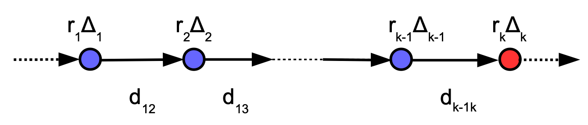
- Using above the total delay is given by . We note that for and we have
- The sum is random variable from the negative binomial distribution
- Using that is a random variable from the Geometric distribution with parameter the average and variance of the total delay is given, respectively, by and . The latter, for and , is simplifies to and .
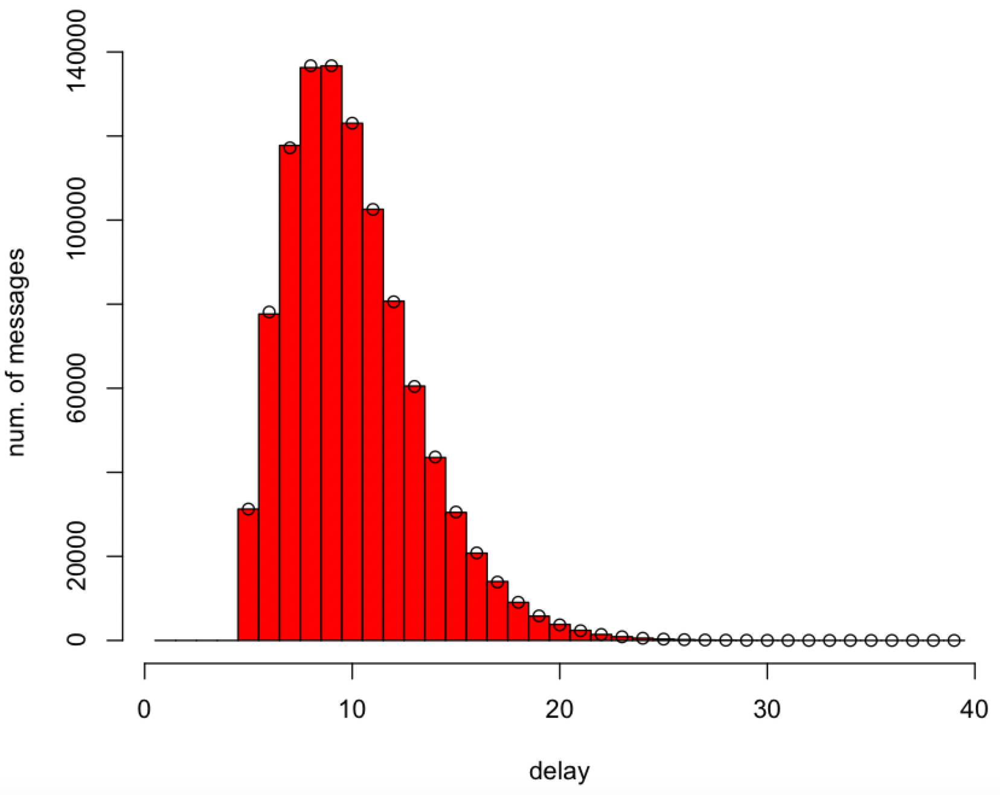
The histogram of delays of messages traveling through nodes (red histogram bars) is compared with negative binomial (o symbols) with parameters and . Here we assumed that and .
- The mean of sum is equals to . For the probability can bounded from above as follows
- To show the above we used for any and Markov’s inequality.
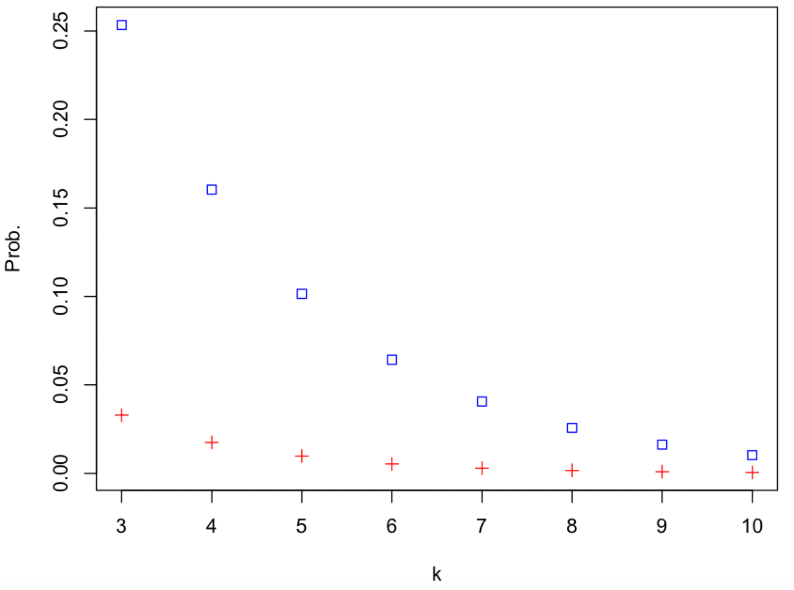
The prob. as a function of plotted for and . Here the simulation (red + symbols) is compared with the upper bound (blue square symbols). In simulation the prob. distr. of was represented by samples of random variables generated from the Geometric distribution with parameter .
- The probability is increasing with decreasing for
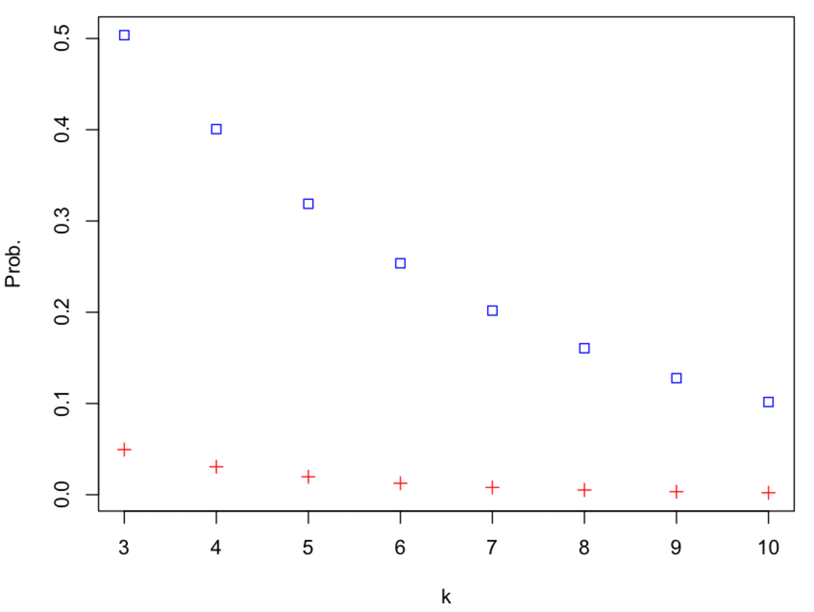
The prob. as a function of plotted for and . Here the simulation (red + symbols) is compared with the upper bound (blue square symbols). In simulation the prob. distr. of was represented by samples of random variables generated from the Geometric distribution with parameter .
- and decreasing with increasing for
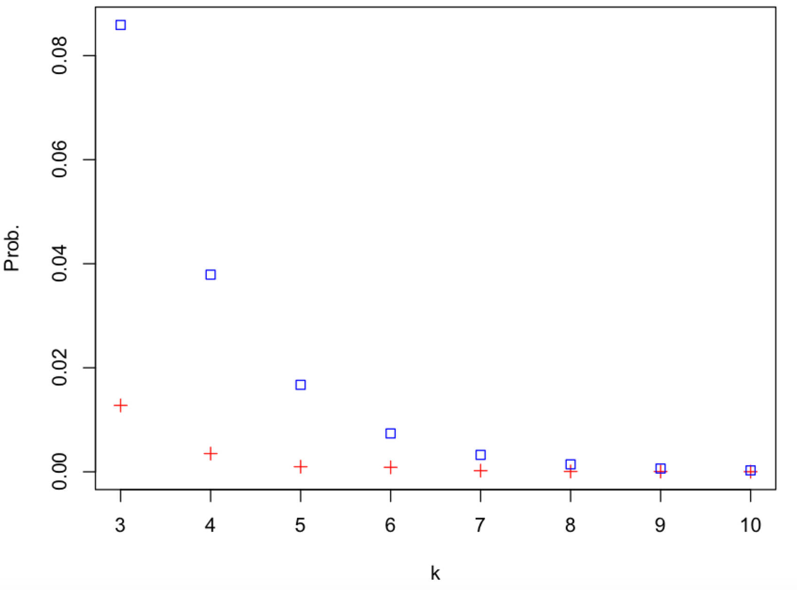
The prob. as a function of plotted for and . Here the simulation (red + symbols) is compared with the upper bound (blue square symbols). In simulation the prob. distr. of was represented by samples of random variables generated from the Geometric distribution with parameter .
- We note that the upper bound can be represented as
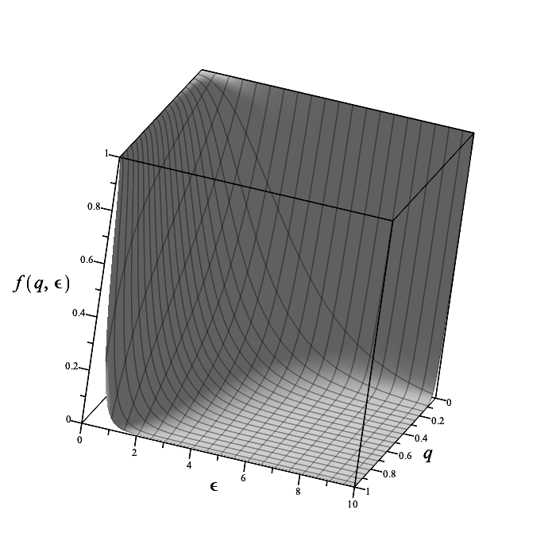
as a function of and .
- Plotting suggests that the upper bound is monotonic decreasing function of , and .
Random Networks
Configuration Model
- Let us consider the probability distribution over the non-negative integers such that and define the probability distribution
- We consider the random rooted tree generated as follows. First, we sample from the distr. and connect the root node to offspring nodes. Second, for each offspring node we sample from the distr. and connect to nodes. The latter is repeated until the tree of height is generated.
- We consider the random graph , where is the set of nodes and is the set of edges, generated by connecting nodes with connectivities sampled from the probability distribution , i.e. the “configuration model”.
- For we have that , where is the subgraph of induced by nodes at a distance (length of shortest path between two nodes) at most from the node , with high probability.
- A special case is a random regular graph (RRG) of connectivity , i.e. each node in is connected to exactly nodes.
Distance on a graph and latency of a broadcast
- Let us assume, without loss of generality, that node in this network wants to send a message to the all nodes of network.
- A node puts a message in to all of its out-queues. Assuming that coin-flipping algorithm is used to remove a message from the queue, we have that a message is delayed by (at most) (see previous section), where random variable from the Geometric distribution with parameter . A message is delayed further in a communication link and hence, for example, a message sent from the node to the node is delayed (at most) by . We note that copies of the same message, sent to other neighbours of node , are delayed in a similar manner.
- For node sending a message to its neighbour the delay is .
- The total delay of a message sent from the node to the node is the sum of delays
along the (directed) path from node to node , .
- Let us define the distance between node 1 and node as the
i.e. the minimum total delay over all (directed) paths from node 1 to node i.
- Now the maximum distance
i.e. the maximum over distances between node and all other nodes, is the time that elapsed from the event “node sent a message” to the event “the message was delivered to all nodes”.
- Thus is the latency of broadcast from node . Let us define the latter as
- We note that maximum distance can be computed using Dijkstra's algorithm.
- Finally, for all pairs of distinct nodes we define the diameter of as follows
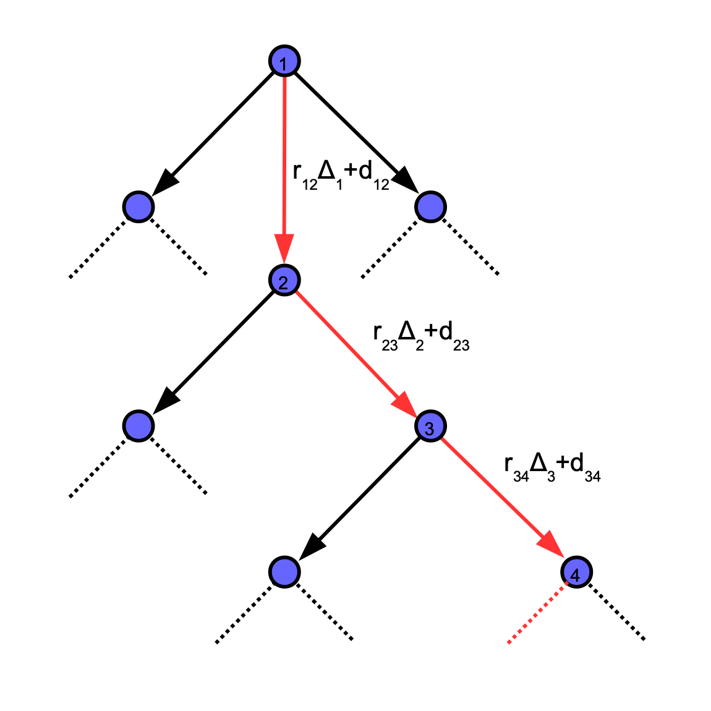
A single message is sent from node to all nodes of the network. The latter has topology of a random regular graph of connectivity which is locally tree-like for large . The total delay of a message sent from node to node , via the nodes and , is given by the sum .
Results for a High Connectivity Regime
- We consider networks with topology of a random regular graph in the high connectivity regime of , where , with and .
- First we consider the case of , i.e. the network is a complete graph, where the least latency is expected. Measuring the latency of broadcast for , we see that it is increasing as and decreasing as as can be seen in the figure below.
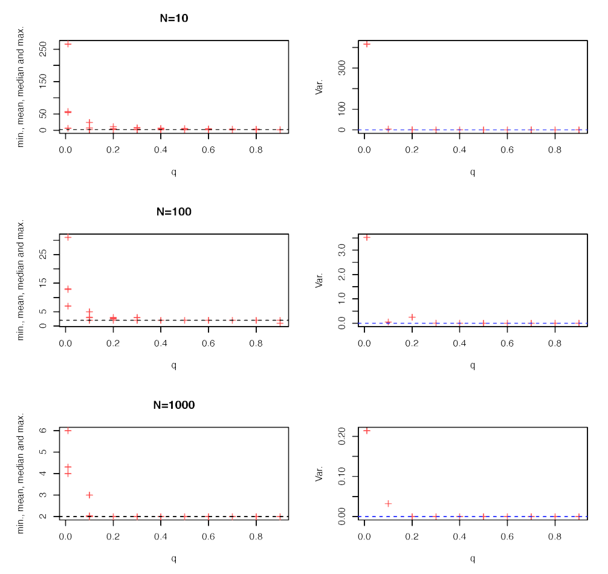
Statistics of message latencies computed for the number of messages (bottom, top and middle) broadcasted on the network of nodes. The latter has the topology of a complete graph. The delay model, for a message sent from node to its neighbours , used is , where , and is random variable from the Geometric distribution with parameter . The black dashed horizontal line corresponds to . The blue dashed horizontal line corresponds to .
- Furthermore, as is increased from to the latency of broadcast becomes more concentrated on the value of 2 as can be seen in figures below.
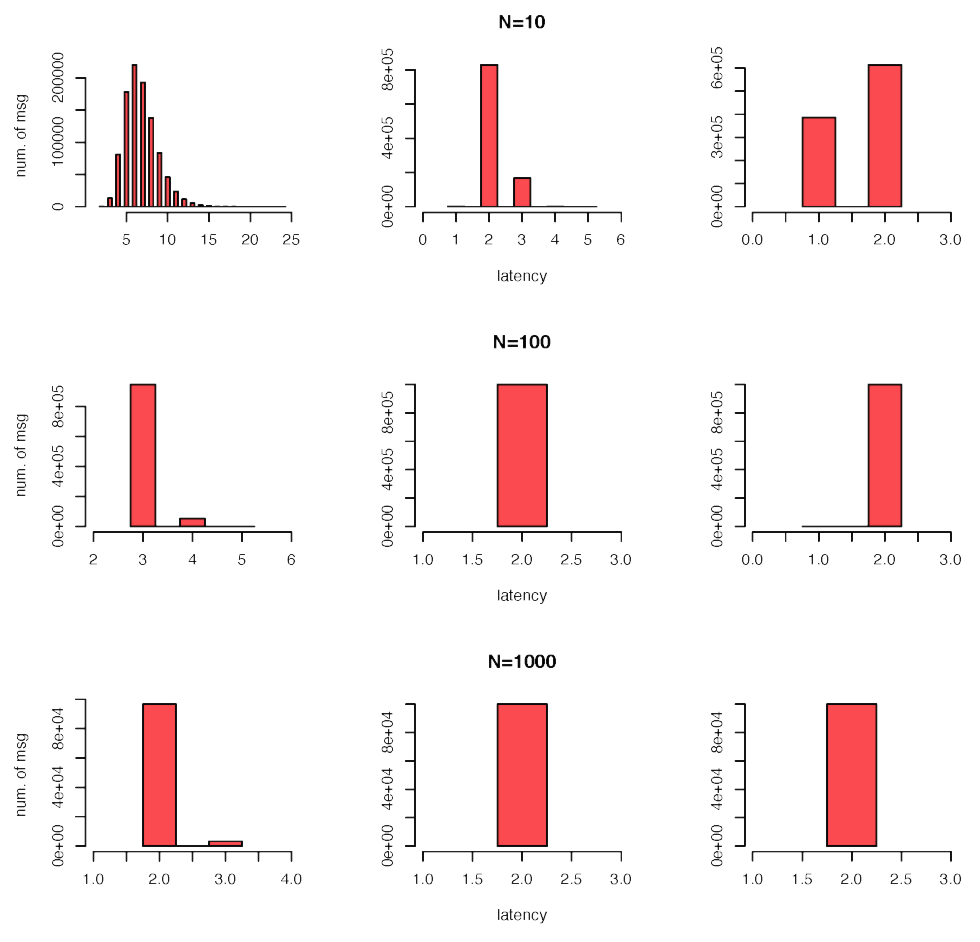
The histogram of message latencies computed for the (top and middle, bottom) messages broadcasted for the network of nodes. The latter has topology of a complete graph. The delay model, for a message sent from node to its neighbours , used is , where , and is random variable from the Geometric distribution with the parameter (left, middle, right).
- Finally, we consider random regular graph in the high connectivity regime of , where .
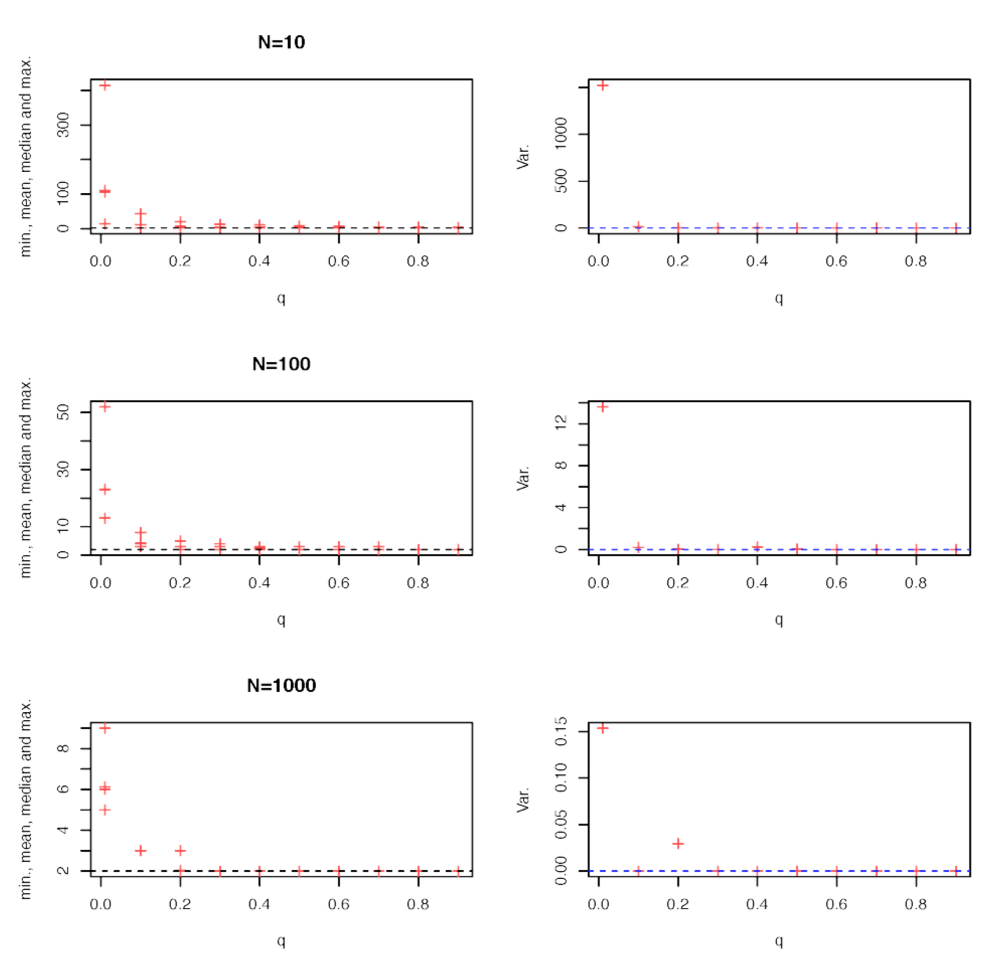
Statistics of message latencies computed for (bottom, top and middle) messages broadcasted on the network of nodes. The latter has topology of a random regular graph with connectivity . The delay model, for a message sent from node to its neighbours , used is , where , and is random variable from the Geometric distribution with parameter . The black dashed horizontal line corresponds to . The blue dashed horizontal line corresponds to .
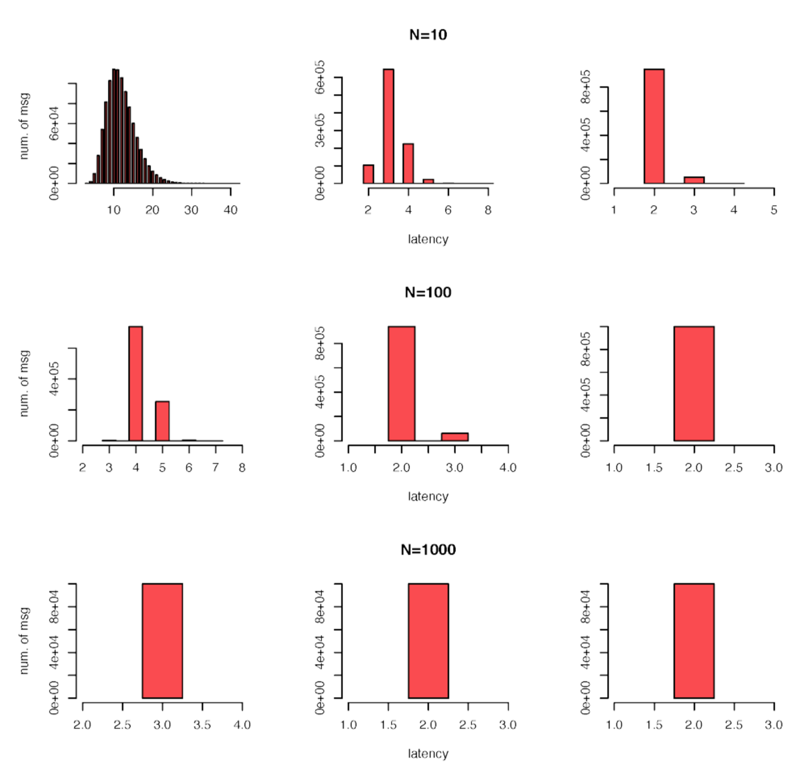
The histogram of message latencies computed for the (top and middle, bottom) messages broadcasted for the network of nodes. The latter has topology of a random regular graph of connectivity . The delay model, for a message sent from node to its neighbours , used is , where , and is random variable from the Geometric distribution with the parameter (left, middle, right).
Results for a Finite Connectivity Regime
- We consider broadcast on networks with topology of a random regular graph in the finite connectivity regime of with and .
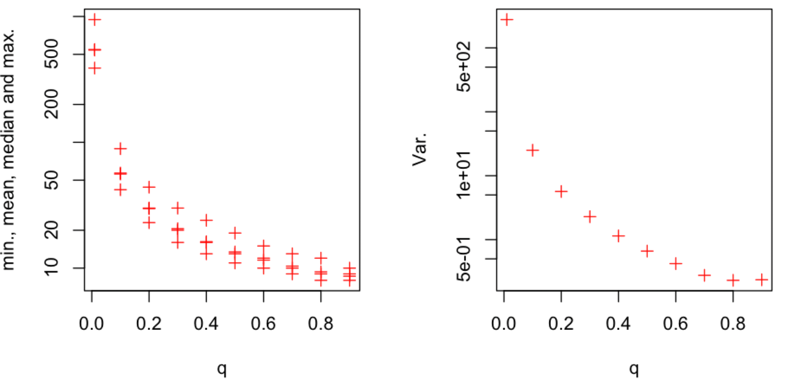
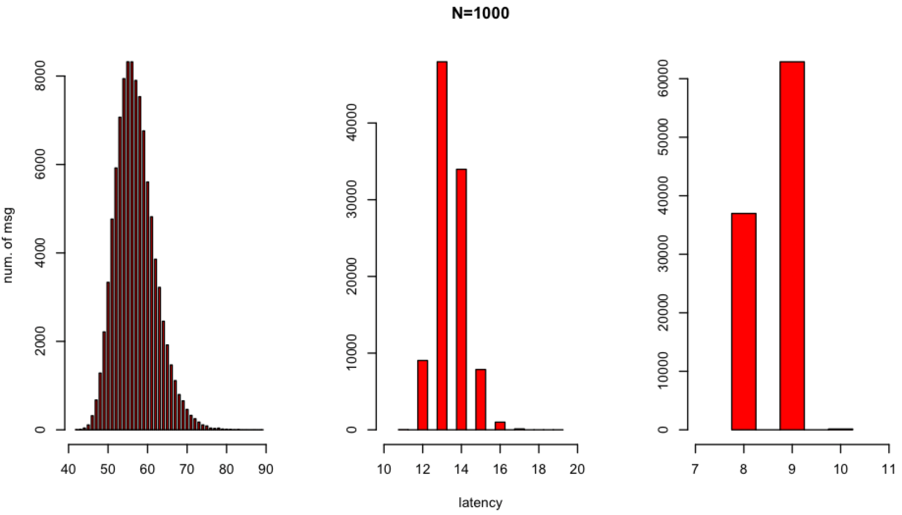
Top: Statistics of message latencies computed for the number of messages broadcasted on the network of nodes. The latter has topology of a random regular graph with connectivity . The delay model, for a message sent from node to its neighbours , used is , where , and is random variable from the Geometric distribution with parameter . Bottom: The histogram of message latencies computed for (left, middle, right).
- Dividing the latency of broadcast by suggests that the latter is converging to some value, dependent on and connectivity , as as can be seen in the figure below.
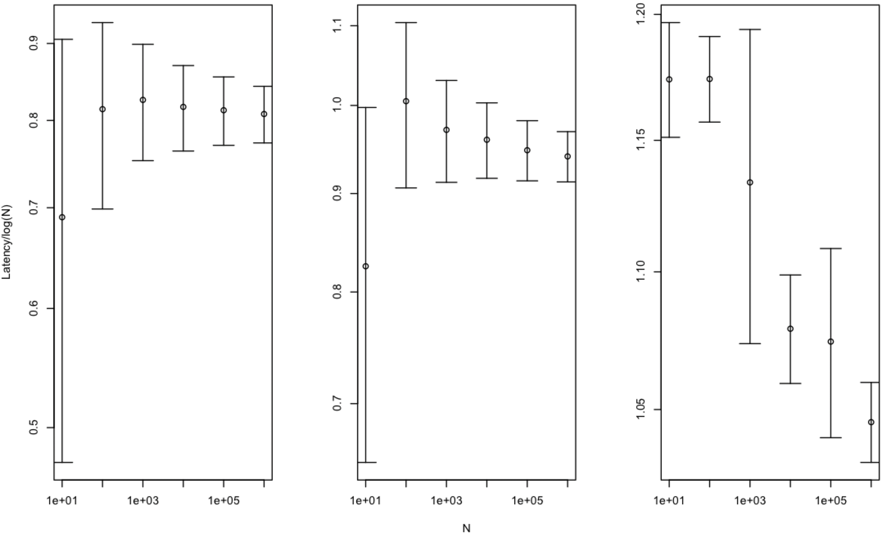
The average latency of broadcast standard deviation (divided by ) plotted as a function of network size for (left, middle, right). The number of messages broadcasted is . The network has topology of a random regular graph with connectivity . The delay model, for a message sent from node to its neighbours , used is , where , and is random variable from the Geometric distribution with parameter .
- For distribution of the random variable , where is sampled from the geometric distribution with parameter , is exponential distribution with parameter . The latter follows from the properties of the Geometric distribution.
- Furthermore, the latency of broadcast, , for delays sampled from the exponential distribution with parameter and is
i.e. the latency of broadcast is withhigh probability when is large.
- The above two points suggest that for small , the latency of broadcast is approximately when are sampled from the geometric distribution with parameter , i.e. the latency of broadcast is diverging as . The latter is consistent with latency measured in simulations.
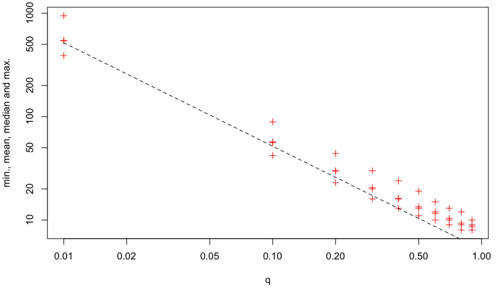
Statistics of message latencies computed for the number of messages broadcasted on the network of nodes. The latter has the topology of a random regular graph with connectivity . The delay model, for a message sent from node to its neighbours , used is , where , and is random variable from the Geometric distribution with parameter . The dashed black line is the function .
- For larger values of q, the average latency of broadcast computed numerically deviates from the asymptotic as can be seen in the figure above.
- We note that the (asymptotic) latency of broadcast is a special case of for some (unknown) function .
- Assuming that the latency of broadcast , with high prob. as , and inverting this expression gives us . Using the data to plot the latter suggests the form for some parameter as can be seen in the figure below.
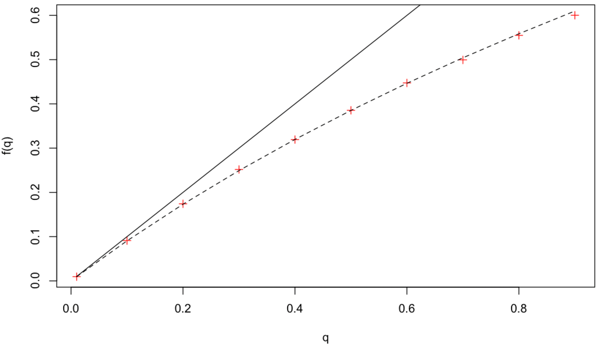
The function as function of . Solid line is and dashed line is with . Here for the broadcast latency the (empirical) mean from the figure was used.
- We note that for we have as .
- Furthermore, fitting to the mean of data gives us
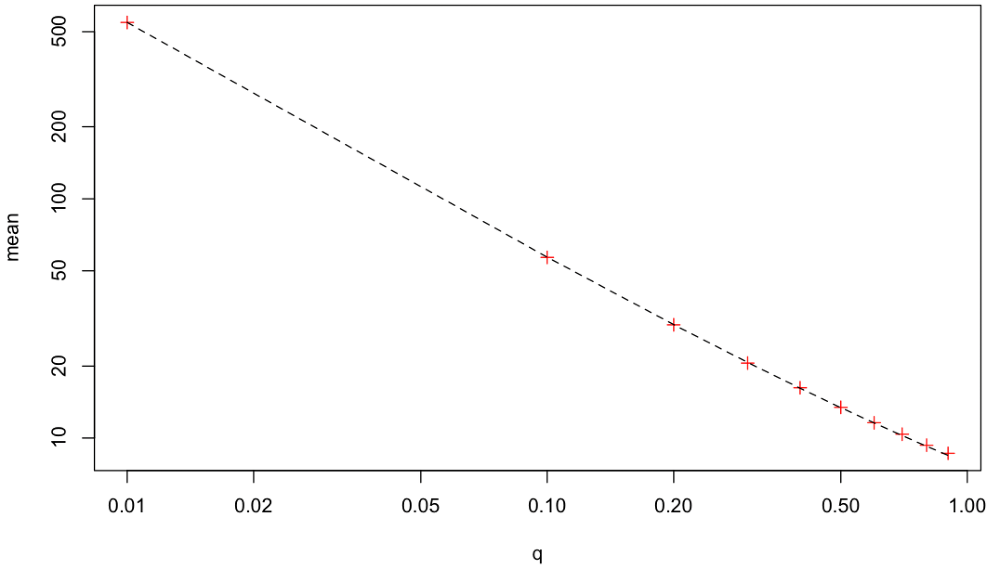
The mean latency of broadcast (+ symbols), computed from the data, is explained by (dashed line). Here the value of , obtained by fitting, is .
- Testing the expression for the mean value of broadcast obtained numerically suggests that the latter is accurate when the connectivity and q are small but significantly diverges from the data when and are large as can be seen in the figure below.
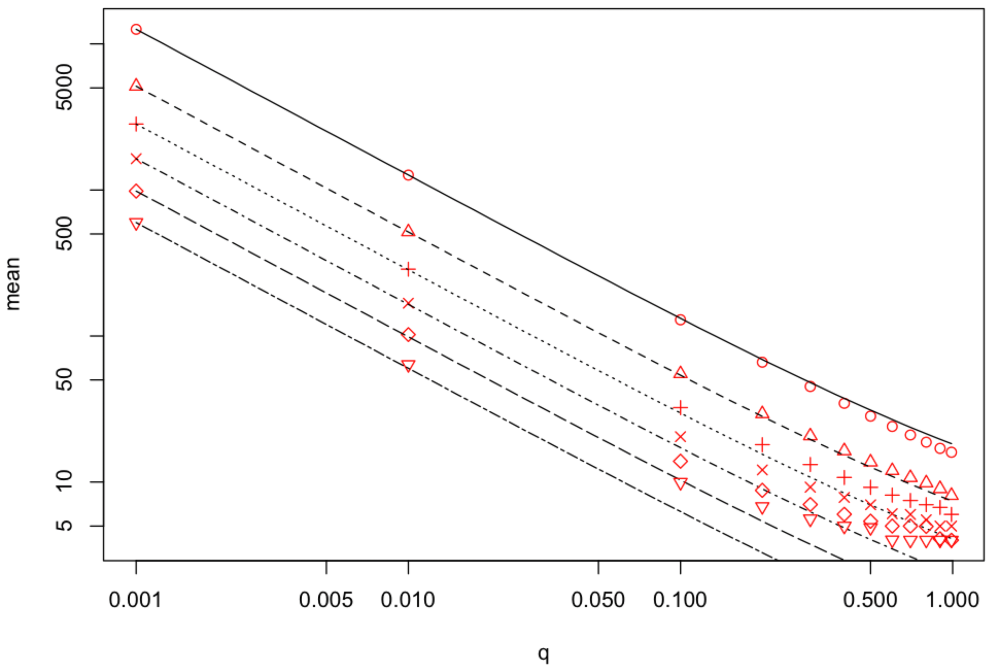
The mean latency of broadcast, represented by symbols, as a function of computed for the number of messages broadcasted on the network of nodes. The latter has topology of a random regular graph with connectivity (top to bottom). The lines were obtained by fitting the parameter in the expression . The delay model, for a message sent from node to its neighbours , used is , where , and is random variable from the Geometric distribution with parameter .
- The probability that the latency of broadcast is greater than some threshold decreases with the connectivity as can be seen in the figure below.
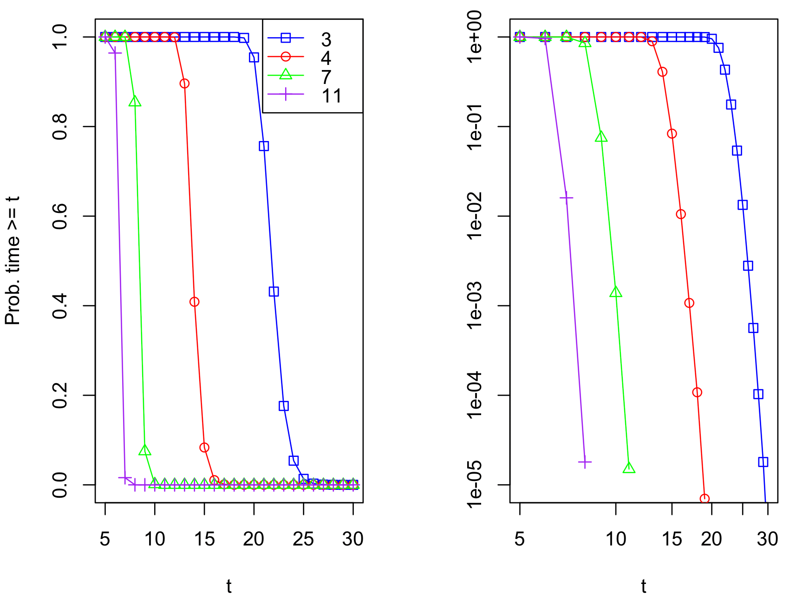
The probability that the latency of broadcast is greater than as a function of computed for the number of messages broadcasted on the network of nodes. The latter has the topology of a random regular graph with connectivity (top to bottom). The delay model, for a message sent from node to its neighbours , used is , where , and is random variable from the Geometric distribution with parameter .
- We note that random regular graph is locally tree-like, i.e. when is large any node is a root of a tree of some height with high probability.
- For the node connectivity the number of nodes in the tree of height , rooted at node , is given by
- In above we assumed that root node has children and every internal node has children (see figure).
- For nodes, the minimum such that is given by
- The latency of broadcast on a tree of nodes is expected to be higher than on random regular with the same and the same connectivity . This is due to the presence of loops in the latter.
- The numerical results for (average) latency of broadcast on a tree of nodes suggest that this average is an upper bound on the average latency of broadcast on on random regular with the same and the same connectivity as can be seen in the figure below.
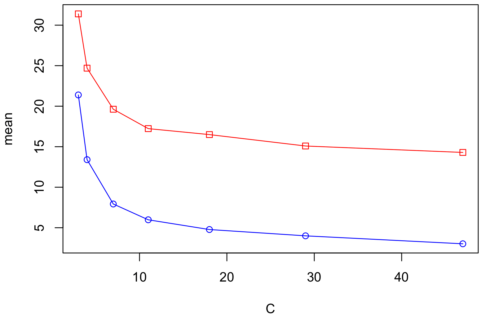
The average latency of broadcast as a function of connectivity computed for the number of messages broadcasted on the network of nodes. The latter has the topology of a random regular graph with connectivity or of a balanced complete tree, rooted at node 1, with the same and . The delay model, for a message sent from node to its neighbours , used is , where , and is random variable from the Geometric distribution with parameter .
- Furthermore, numerical results for latency of broadcast on trees suggest that the latter also can be used to obtain an upper bound on probability as can be seen in the figure below.
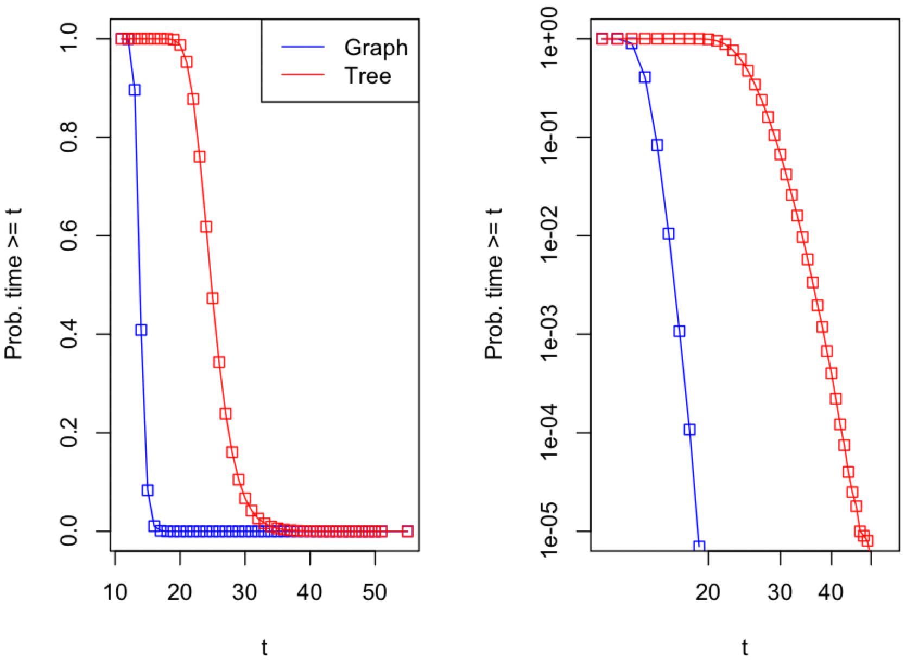
The probability that the latency of broadcast is greater than as a function of computed for the number of messages broadcasted on the network of nodes. The latter has the topology of a random regular graph with connectivity or of a balanced complete tree rooted at node 1. The delay model, for a message sent from node to its neighbours , used is , where , and is random variable from the Geometric distribution with parameter .
- We note that the latency of broadcast on a tree of finite size is equivalent to the latency of broadcast in finite neighbourhood of a sender node in large random regular graph. In the latter, as the finite neighbourhood of a node is (with high prob.) a Cayley tree (see figure below) up to some distance, measured in by number edges between the node and any other node.
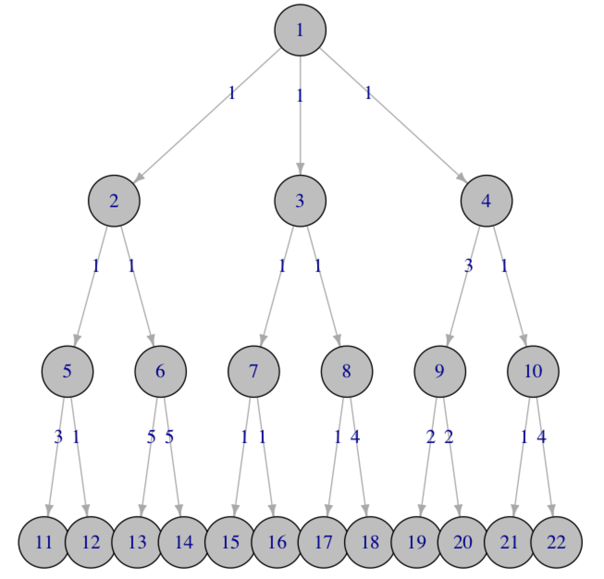
The neighbourhood of node in a very large random regular graph of connectivity . The weights in the latter are independent random variables from geometric distribution with parameter .
- The numerical results for latency of broadcast on Cayley trees suggest that the latter also can be used to obtain an upper bound on probability as can be seen in the figure below.
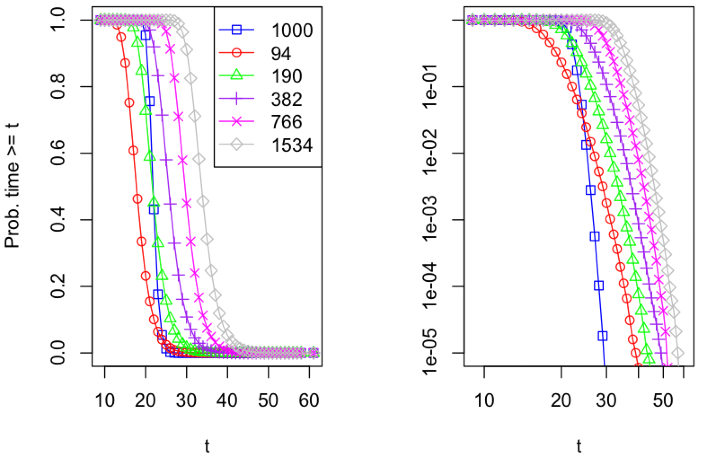
The probability that the latency of broadcast is greater than as a function of computed for the number of messages broadcasted on the network of nodes. The latter for has the topology of a random regular graph with connectivity and for is a Cayley tree rooted at node 1. The delay model, for a message sent from node to its neighbours , used is , where , and is random variable from the Geometric distribution with parameter .
- The latency of broadcast on a tree can be computed iteratively. The latter uses the property
- To show this we consider the latency of broadcast on a tree of nodes rooted at node (see figure) as follows.
- First, we define the latency of communication a message, sent from node to all nodes in, when it is relayed from the node to as then the latency of broadcast
- Second, we consider the latency of broadcast
- Now the maximum distance from node to a leaf node , , can be computed as follows
- Furthermore, if node is adjacent only to leaf nodes but one then
- For node not adjacent to leaf nodes the can be computed via equation similar to the equation. The latter suggests that the latency of broadcast can be computed recursively using above equations and numerical complexity of this computation is . This is better than when Dijkstra's algorithm is used to compute .
- The distribution of the latency of broadcast on a Cayley tree of height can computed by the population dynamics algorithmas follows.
- First, for each compute boundary conditions as follows
- Second, for each do the following for each
- Finally, for each compute
- The prob. distribution of for a Cayley tree of height can be estimated by the density
- The above dynamics can be described by the equation
- The boundary condition corresponding to the Cayley tree is given by
- The prob. distribution of for a Cayley tree of height is given by
- Using that the prob. distribution is geometric with parameter , one could try to solve above equations analytically. Also one could consider a single loop and see how this will change the equation.
- For we have with prob. and hence the latency of broadcast is dominated by the diameter of a random regular graph, i.e. the largest distance between any two nodes. The bounds (using the Theorems 1 and 3) for the latter for (very small) are given by
A Simple Model of Communication Latency in Consensus
- To model the communication latency of a node participating in consensus, we assume that latency has two dominant components which are due to delays in “mixing“ and “broadcast” (cf. the formula “Mixnet delay (gamma distribution) sampled once per block + PoL (constant) + final broadcast from exit mixnode (exponential distribution) sampled per node” used in consensus simulations).
- We assume that given a network of nodes, a gossiping-like mode of communication is used.
- Let us assume that the network topology used is a random regular graph , where is the set of nodes and is the set of edges, with connectivity . The latter is sampled only once and remains fixed for the duration of a consensus protocol.
- Furthermore, to each edge we assign a random variable , sampled from some probability distribution, to model delays in communication links. This gives rise to the weighted graph . The probability distribution could be exponential, with parameter such that is the average and is the variance, or for all (cf. the “300ms” constant delay used in current estimates of latency).
- To model the mixing delay we assume, without loss of generality, that node sends (via mix nodes) a message to node , and adopt the single-path model as follows
- In above we assume that mix nodes, and the sender node , introduce delays modeled by random variables sampled from the Geometric distribution with the parameter . The latter models a queue which uses coin-flipping to remove a message. Here is a cost of attempt to remove a message, measured in units of time, from the queue.
- The second part of above equation models the contribution of gossiping to the delay. Here is the “distance”, measured in units of time, between the nodes and on the graph which is defined as follows
- Furthermore, the distance , i.e. samples of random variables are different for different to model the gossiping aspect of communication.
- The distance can be interpreted as the latency of (communication) path between the sender node and the receiver node when the gossiping mode of communication is used.
- We note that in a weighted graph the distance can computed by using the Dijkstra's algorithm.
- To model the broadcast delay we assume, without loss of generality, that the node broadcasts the message, received from node , to all nodes in the network. Assuming that gossiping is used the delay is for each node .
- To simulate the mixing and broadcast delays in a consensus simulation the following algorithm can be used
- Generate a random regular graph with connectivity .
- For the sender node , sending a message to the receiver node , sample (without replacement) the mix nodes and from the set of all available nodes .
- Sample the random delays , from the geometric distribution with parameter .
- Given the random regular graph , generate the sequence of weighted graphs associated with each directed edge in the path and compute the distances on these graphs.
- Compute the mixing delay
- Given the same random regular graph , generate the graph with random weights and for the node compute the distance for all . The latter are broadcast delays.
- Repeat the steps 2 to 6 for each sender node.
- We note that when , i.e. all communication links have the same latency, then all distances on the weighted graph can be precomputed which simplifies the steps 4 and 6 in the above algorithm.
- Also the algorithm can be easily adopted to use other models of random graphs, and other models of mixing and communication delays.
Bibliography
Amir Dembo. Andrea Montanari. "Ising models on locally tree-like graphs." Ann. Appl. Probab. 20 (2) 565 - 592, April 2010. https://doi.org/10.1214/09-AAP627
Hamed Amini. Marc Lelarge. "The diameter of weighted random graphs." Ann. Appl. Probab. 25 (3) 1686 - 1727, June 2015. https://doi.org/10.1214/14-AAP1034
Mézard, M., Parisi, G. “The Bethe lattice spin glass revisited.” Eur. Phys. J. B 20, 217–233 (2001). https://doi.org/10.1007/PL00011099
Bollobás, B., Fernandez de la Vega, W. “The diameter of random regular graphs.” Combinatorica 2, 125–134 (1982). https://doi.org/10.1007/BF02579310